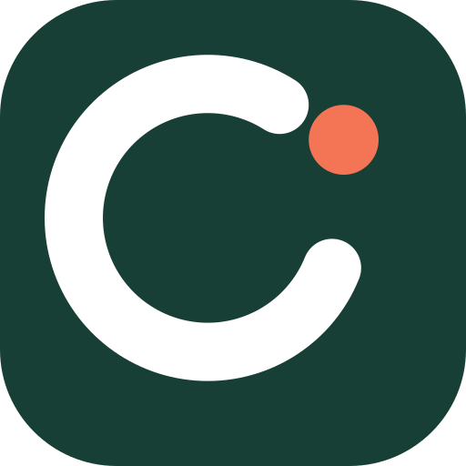

¿Nos acompañan?
Confirmá si tu familia va a participar.
Cierra el 20 de octubre de 2026,
a las 20:00 (Uruguay).
Una marca para quienes se hacen cargo del próximo encuentro de las familias.
Explorar la identidadRondia · Septiembre 2026
Propuesta para evaluar y aplicar al desarrollo
Pendiente de verificación del comité.
El primer cliente propuesto es el comité de familias que coordina un evento escolar y necesita saber qué falta.
El valor está en reunir las respuestas, los plazos y el seguimiento de aportes que hoy una persona tiene que reconstruir.
Un gesto circular, un punto coral y un nombre corto. La calidez se reserva para la marca; la información mantiene su precisión.

Lo que nos reúne.
Una voz editorial para portadas y comunicación.
Cada respuesta cuenta.
Texto claro, acciones grandes y estados explícitos.
Rondia es una propuesta de nombre. El .com aparece registrado en una fuente secundaria; no se verificaron disponibilidad registral, dominios alternativos o usuarios sociales.
Referencias de dos accesos independientes. Los datos son ficticios y las acciones solo simulan estados en este dossier.
Vista familiar · Muestra interactiva
Familia de muestra
28 de noviembre de 2026
Confirmá si tu familia va a participar.
Cierra el 20 de octubre de 2026,
a las 20:00 (Uruguay).
UYU 2.500 · Informe de ejemplo
El comité va a revisar la transferencia. Todavía no está confirmada la recepción.
Vista de diseño con datos ficticios.
Las respuestas no se envían a la aplicación.
Vista del comité · Muestra interactiva
Fiesta de la generación
56 de 80 familias · Verificado por el comité
Consultá el informe y verificá contra la cuenta del evento antes de confirmar la recepción.
Transferencia e informe ficticios. Esta demostración no contiene un comprobante real.
16 familias todavía no informaron su pago.
Las cifras de esta muestra son independientes de la vista familiar.
Las acciones interactivas del dossier se muestran aquí en su estado inicial. No corresponden a operaciones reales.
El color acompaña al texto. Un informe de pago nunca se presenta como una recepción confirmada.
La consulta espera una acción de tu familia.
El comité todavía tiene que verificar la recepción.
Un organizador confirmó el ingreso del aporte.
Podés consultar la respuesta que quedó guardada.
Aplicación de marca en pieza social de 1200 × 630. Muestra sin publicación, dominio ni llamada a una contratación inexistente.
Propuesta del 13 de septiembre de 2026. Nombre, posicionamiento y oferta comercial propuestos; pendientes de adopción por el usuario. Este documento distingue lo observado en el repositorio de las hipótesis a validar con clientes.
Una plataforma web para coordinar eventos de grupos de familias. El comité publica información y consultas, define plazos, identifica pendientes y registra qué aportes fueron recibidos. Cada familia entra con su enlace privado, responde, consulta su participación e informa una transferencia. El comité verifica la recepción por separado.
La unidad de participación es la familia dentro de un evento. Esa decisión organiza el producto entero: una respuesta compartida, un acceso propio y una obligación de pago. Los organizadores se identifican individualmente y solo deben administrar sus eventos.
El primer caso documentado es una fiesta de fin de año de una generación escolar: aproximadamente 80 familias y entre 5 y 10 organizadores. La estructura prevista admite varios espacios, grupos y eventos. El blueprint inicial es un antecedente; prevalecen las decisiones posteriores de docs/01 a docs/07.
El trabajo difícil ocurre durante la preparación: reconstruir acuerdos, contar respuestas, recordar plazos, revisar comprobantes y explicar el estado del evento. Cuando esa información está repartida entre conversaciones, formularios y planillas, alguien termina sosteniendo una versión manual de todo.
La necesidad funcional es tener un registro común y vigente por familia. La necesidad emocional es reducir la preocupación de olvidarse de alguien o equivocarse con dinero ajeno. La necesidad social es poder rendir cuentas al grupo con información atribuible, sin exponer innecesariamente a otras familias.
Trabajo que el cliente busca resolver: «Cuando me hago cargo del evento de la generación, quiero saber qué falta y compartir esa información con el comité, para llegar a la fecha con las respuestas y los aportes revisados».
El valor aparece si se reduce el trabajo de seguimiento. Publicar formularios por sí solo no demuestra ese valor. Hay que medir tareas repetidas, tiempo de gestión y cantidad de dudas durante el piloto.
Existe implementación de pantallas, rutas y servicios para accesos, grupos, eventos, consultas, pagos, resultados, soporte, mensajes preparados y exportación. Hay componentes visuales compartidos y variables de estilo. El README conservaba una descripción anterior que decía que todavía no existía aplicación; se actualizó durante esta entrega para reflejar el estado observado y sus límites.
La inspección realizada es de producto y código fuente. No se conectó a producción, no se leyeron datos de familias y no se certificó el funcionamiento completo. La existencia de un módulo o de una prueba no significa que todos sus criterios de aceptación estén cumplidos.
| Evidencia observada | Implicación para el negocio |
|---|---|
| Accesos familiar y administrativo separados; servicios específicos para cada uno. | Una experiencia adecuada para comités cuyos integrantes también participan como familia. |
| Consultas con estados, plazos, respuestas y versiones. | Permite coordinar decisiones durante la preparación, además de comunicar la fecha del evento. |
| Pagos con estados informado, revisión y verificado. | Aporta seguimiento; el producto no procesa dinero ni confirma depósitos por sí mismo. |
| Mensajes preparados para WhatsApp, soporte y exportación. | Puede incorporarse a la forma actual de trabajar del comité. El envío sigue siendo manual. |
| Colores, botones y tarjetas compartidos, con muchos estilos dentro de las pantallas. | Hay una base para aplicar marca, pero cambiar solo la paleta dejaría inconsistencias. |
src/app/admin/events/[eventId]/page.tsx obtiene datos con Firebase Admin, busca el identificador en varios espacios y entrega participantes, pagos y consultas al componente cliente. En esa página no se valida sesión ni pertenencia antes de leer. El único layout localizado tampoco agrega esa protección y no se encontró middleware. Es un hallazgo estático prioritario: requiere corrección y pruebas de acceso anónimo y de otro evento antes de un piloto real. No se intentó acceder a datos para demostrarlo.src/app/admin/page.tsx y src/app/api/admin/auth/login/route.ts usan correo y contraseña. docs/07 define enlace por correo. El diseño debe reflejar la decisión que se reconcilie, sin anunciar hoy acceso administrativo sin contraseña.src/app/e/[eventId]/page.tsx considera el pago informado como una etapa completada y puede mostrar un mensaje global de finalización. Puede ser correcto que la familia ya no tenga una acción pendiente, pero debe seguir viendo «Pendiente de verificación». El diseño propuesto distingue trabajo familiar terminado y dinero recibido.La marca debe acompañar un producto que cumpla estas reglas. No usar «seguridad garantizada», «conciliación automática» o «listo para cualquier colegio» como argumentos comerciales.
Comités de familias que organizan una fiesta de generación, cierre de curso o encuentro escolar con varias consultas previas y un aporte único por familia. Conviene empezar con eventos similares al piloto conocido. Uruguay es una hipótesis de lanzamiento razonable por la zona horaria y moneda del proyecto; no hay investigación que pruebe demanda local.
El criterio de selección más útil es conductual: ya hay una persona centralizando respuestas y pagos, el comité reconoce ese trabajo, falta tiempo para el evento y tiene capacidad para aprobar un gasto compartido.
| Papel | Persona o grupo | Qué necesita para aceptar |
|---|---|---|
| Impulsor y usuario principal | Familiar que coordina el comité. | Ver pendientes sin mantener otra planilla y repartir tareas de seguimiento. |
| Decisor de compra | Comité o comisión que aprueba gastos. | Precio cerrado, alcance claro y una demostración con su caso. |
| Pagador | Quien administra el presupuesto común o la asociación de familias. | Un mecanismo de contratación y comprobante comercial, a definir fuera del MVP. |
| Usuario de seguimiento financiero | Integrante que verifica transferencias. | Separar informado de recibido y conservar correcciones. No constituye un rol con permisos especiales. |
| Usuario invitado | Adultos que comparten el enlace familiar. | Entrar desde el celular, entender qué hacer y comprobar que se guardó. |
| Facilitador o futuro comprador | Colegio, asociación o club. | Confianza, continuidad entre comités y evidencia de uso. No asumir que el colegio autoriza o paga el piloto. |
Persona ficticia para orientar diseño y ventas. Edad propuesta: 41 años; no es un requisito de segmentación. Trabaja, tiene responsabilidades familiares y aceptó coordinar la fiesta de la generación. Usa WhatsApp todos los días y puede manejar una planilla, pero no quiere administrar un sistema complejo.
Su disparador de compra es darse cuenta de que se acercan los plazos y todavía hay respuestas o transferencias sin revisar. Su objeción principal: «Si las familias no lo usan, voy a tener el doble de trabajo». También pregunta quién conserva los datos, cómo recupera la información y quién la ayuda si algo falla.
La demostración que necesita: cargar una lista ficticia, abrir un enlace familiar, guardar una respuesta, encontrar a quienes faltan y ver la diferencia entre pago informado y recibido. Su señal de éxito es poder resolver el seguimiento desde el celular sin pedirle a otra persona que le arme un reporte.
Tras validar el primer segmento, probar asociaciones de familias con eventos recurrentes y clubes con encuentros financiados mediante un aporte por familia. Un contrato institucional anual puede mejorar la continuidad entre generaciones, pero requiere validar compra, acompañamiento y permisos.
No priorizar inicialmente productoras de festivales, congresos, bodas profesionales o viajes financiados en cuotas. Esos casos suelen exigir entradas, proveedores, presupuestos, múltiples tarifas o pagos parciales que quedan fuera del alcance actual. Tampoco vender el producto como gestión académica escolar.
Consulta exploratoria de fuentes públicas, 13/09/2026. No es un estudio exhaustivo ni una estimación del tamaño de mercado.
| Alternativa | Qué ofrece o resuelve | Enfoque recomendado para Rondia |
|---|---|---|
| WhatsApp + formularios + planilla | Es la combinación que el problema documentado busca ordenar. | Conservar WhatsApp como canal y concentrar el registro por familia. Su uso real y costo de cambio deben investigarse. |
| Cheddar Up | Cobros e información de grupos; permite pagar sin cuenta o descarga. Descripción oficial. | El acceso sencillo no es una diferenciación exclusiva. Enfatizar coordinación por etapas y registro de transferencias verificadas por el comité. |
| Konstella | Comunidad privada para organizaciones de familias, comunicación, actividades y voluntariado. Sitio oficial. | Proponer una incorporación acotada al evento. No exigir adoptar una plataforma escolar completa. |
| Eventbrite | Venta de entradas, difusión y herramientas para organizadores. Presentación oficial. | Vender preparación y seguimiento de un grupo ya convocado. No competir por descubrimiento público o ticketing. |
La oportunidad inferida es especializar el recorrido de comités hispanohablantes. La combinación de identidad familiar, consultas con cierre y verificación administrativa constituye el enfoque; todavía no demuestra una ventaja difícil de copiar. La defensa comercial tendría que construirse con facilidad de uso, acompañamiento repetible y recomendaciones entre comités.
Empezar con una tarifa fija por evento que paga el comité. Las familias invitadas no pagan por acceder. Incorporar puesta en marcha asistida y una explicación breve al comité. El dinero del evento se transfiere a la cuenta indicada por sus organizadores; la plataforma registra el seguimiento.
La tarifa por evento acompaña un uso temporal y evita cobrar por cada organizador. No se recomienda comisión sobre aportes mientras Rondia no procesa dinero. Una suscripción institucional podría evaluarse después de observar repetición de eventos.
Hipótesis de precio para una prueba: UYU 4.900 por evento comparable al piloto. Es una cifra propuesta para entrevistar y cotizar de forma experimental, no una tarifa validada, un precio de mercado ni una oferta publicada. Con 80 familias equivale a UYU 61,25 por familia como referencia del costo compartido; no implica cobrarles individualmente.
Ejercicio económico ilustrativo, con importes antes de impuestos, comisiones de cobro del servicio y costos fijos: si de UYU 4.900 se asignan UYU 400 a infraestructura y 3 horas a UYU 600 de acompañamiento, quedan UYU 2.700 antes de adquisición y estructura. Si el acompañamiento consume 8 horas, el resultado pasa a -UYU 300. Los costos son supuestos, no mediciones. El tiempo de soporte puede determinar la viabilidad más que el alojamiento.
Antes de vender, definir duración de acceso, conservación posterior, alcance del soporte y quién puede contratar. Preparar manualmente contratación y cobro del servicio; suscripciones, facturación automática y autoservicio siguen fuera del software acordado.
Registrar por piloto: familias convocadas y que acceden, respuestas antes del cierre, asistencia requerida, horas de preparación del comité, horas de soporte del proveedor, errores de conciliación y voluntad de volver a contratar. Comparar con el evento anterior cuando haya datos fiables; si no, registrar una línea de base prospectiva.
Umbrales propuestos para decidir otra ronda: 2 de 3 comités aceptan pagar el precio probado; las 5 personas completan sus tareas críticas sin ayuda tras las correcciones; cero accesos indebidos en pruebas de aislamiento; soporte registrado de hasta 3 horas por evento. Son criterios de decisión iniciales, no evidencia estadística ni compromisos de servicio.
Nombre propuesto: Rondia. En el logotipo se escribe rondia; en texto corrido, Rondia. Pronunciación prevista: «RON-dia», sin tilde. Evoca una ronda y la participación de un grupo; es una asociación creativa, no una etimología.
Categoría: organización de eventos de familias.
Descriptor: Consultas, avisos y seguimiento de pagos para eventos de familias.
Frase de marca: Organizar juntos, con las cosas claras.
Posicionamiento: Para comités de familias que preparan un evento compartido, Rondia reúne consultas, plazos y seguimiento de aportes en un espacio que las familias pueden abrir desde su enlace. El comité mantiene el control de las decisiones y la verificación de pagos.
Personalidad: cercana al explicar, precisa al registrar y serena cuando algo requiere revisión. Trata a los adultos como personas capaces. No infantiliza por estar vinculada a colegios.
Promesa a validar: que el comité pueda saber qué falta sin reconstruir conversaciones, y que cada familia pueda comprobar el estado de su participación.
Razones para creer: estados explícitos, una identidad por familia, registro de cambios, resultados publicados por el comité y acceso pensado para celular. Su uso comercial depende de verificar los recorridos reales.
Dirección estética: verde profundo para estructura y acciones; fondo marfil; coral para identificación de marca; verde claro para superficies editoriales. Tipografía de interfaz familiar y legible, con títulos editoriales de serif en piezas de marca. El evento es protagonista dentro del producto; la marca acompaña.
Se exploraron Enronda, Juntiva, Juntara, Aunalia y Rondia. Enronda ya identifica una plataforma de bienestar y experiencias; Juntiva aparece como software de actas; Juntara como agencia de servicios digitales. Se descartaron por coincidencias visibles. Enronda, Juntiva, Juntara. Aunalia también mostró antecedentes de uso; no se profundizó al descartarla.
Las búsquedas «Rondia», «Rondia app eventos» y «Rondia software app marca eventos dominio» no mostraron una coincidencia evidente del mismo tipo de producto entre los resultados consultados. Aparecieron usos personales y geográficos. Esto no prueba disponibilidad ni originalidad exclusiva.
Un registro WHOIS publicado por un tercero indica que rondia.com está registrado. Es una señal para no dar por disponible ese dominio; no se verificó la situación en un registrador en tiempo real. usarondia.com y rondia.uy son alternativas para comprobar, sin disponibilidad verificada. No se compró ni reservó ningún dominio o usuario social.
Antes de adoptar públicamente el nombre: verificar antecedentes denominativos y gráficos, posibles similitudes, dominios y usuarios sociales en los mercados elegidos. La búsqueda exploratoria realizada no sustituye esa validación. Probar también recuerdo, escritura y pronunciación con 5 personas del segmento.
Se entrega este brief, guía de identidad, logotipos vectoriales, icono de aplicación, pieza social de muestra, variables de diseño, dossier visual y vistas de referencia del producto con datos ficticios. La propuesta permite revisar y luego aplicar la marca sin decidir nuevamente cada color o estado.
El kit no cambia los recorridos de la aplicación, no agrega funciones comerciales y no publica un sitio. Quedan por decidir la adopción de Rondia, la validación del nombre y el dominio, el precio experimental y la fecha para aplicar la identidad. Las correcciones funcionales deben abordarse con sus pruebas antes de habilitar el piloto.
README y docs/01 a docs/07; blueprint conservado como antecedente; src/app/page.tsx, src/app/layout.tsx, páginas familiares y administrativas; módulos de accesos, etapas, pagos y sus tipos; componentes y estilos compartidos; suites de pruebas existentes. La revisión se hizo sobre el árbol de trabajo disponible el 13/09/2026.
Propuesta de identidad v1 · 13/09/2026. Complementa el brief de negocio. Los ejemplos usan un evento y personas ficticias. La marca no está registrada ni aplicada todavía al producto operativo.
Nombre: Rondia. Logotipo: rondia, en minúsculas. Descriptor: «Consultas, avisos y seguimiento de pagos para eventos de familias». Frase: «Organizar juntos, con las cosas claras».
El símbolo es una ronda abierta con un punto coral. Sugiere un grupo y un lugar para participar. El trazo redondeado se repite en el logotipo. Es un dibujo vectorial propio de esta propuesta; su exclusividad registral no fue evaluada. No animarlo como un indicador de carga.
El logotipo se entrega en curvas, sin dependencia de fuentes. Usar el archivo horizontal principal sobre fondos claros, el inverso sobre verde profundo y el monocromo cuando solo haya una tinta. No reconstruirlo escribiendo el nombre con la tipografía de la interfaz.
| Nombre | Valor | Uso |
|---|---|---|
| Bosque | #173F35 | Marca, texto destacado y acción principal. Texto blanco en botones. |
| Bosque activo | #0E2C25 | Hover y pulsación de acción principal. |
| Marfil | #F6F3EA | Fondo general y piezas editoriales. |
| Papel | #FFFFFF | Formularios, tarjetas y documentos. |
| Coral | #F37556 | Punto de marca y acentos decorativos. No sustituye alertas o errores. |
| Brote | #D8EBA3 | Superficies editoriales con texto Bosque. No significa pago recibido. |
| Tinta | #203B34 | Texto de lectura. |
| Secundario | #52645D | Ayudas y metadatos legibles. |
| Borde | #C9D0C5 | Separadores y tarjetas; no basta para identificar un input. |
| Borde de control | #75877E | Inputs, selects y controles sin relleno destacado. |
Distribución orientativa en piezas: base clara dominante, verde como estructura, acentos limitados. No es necesario aplicar porcentajes rígidos a cada pantalla.
El coral no lleva texto blanco pequeño. En superficie coral usar Bosque activo (#0E2C25). El contraste de pares concretos se registra en brand/rondia/contrastes.json; ese cálculo no certifica accesibilidad de toda la aplicación.
Interfaz: Segoe UI, con alternativas system-ui, -apple-system, BlinkMacSystemFont, Arial, sans-serif. Son fuentes locales; el sistema usa la disponible en cada dispositivo y no descarga archivos externos. Cuerpo 16 px / 1,5; ayudas 14 px / 1,5; subtítulos 20 px / 1,3; títulos de pantalla 28 px / 1,15. Pesos 400, 600 y 700. Cifras financieras con numerales tabulares.
Piezas de marca: Georgia, alternativa Times New Roman, serif, para titulares de 40–72 px con interlínea 1,08. La mezcla editorial aporta carácter en portadas y comunicación. En formularios se mantiene la fuente de interfaz.
Usar mayúsculas solo en rótulos breves. No convertir instrucciones completas a mayúsculas. Evitar textos funcionales menores a 14 px. Montos con moneda explícita: «UYU 2.500». Fechas con año y zona horaria donde exista un cierre.
Espaciado basado en 4 px: 4, 8, 12, 16, 24, 32, 48 y 64. Márgenes de pantalla móvil: 16 px. Ancho de formularios: máximo 640 px. Administración de escritorio: hasta 1120 px cuando el contenido lo justifica.
Tarjetas: fondo blanco, borde de 1 px, radio de 16 px y sombra mínima. Botones: altura mínima de 48 px, radio de 12 px, texto 16 px y peso 600. Inputs: mínimo 48 px de altura, etiqueta visible y borde de control. Un botón principal por bloque de decisión.
Diseñar primero para 360 px y verificar también 320 px. Tarjetas administrativas o filas que se apilan; ninguna tabla ancha puede ser el único acceso a una función. Permitir zoom, teclado y reducción de movimiento. Foco de 3 px con separación de 3 px, ajustado al fondo de cada superficie.
Iconos de trazo sencillo y consistente, acompañados de texto cuando representan acciones. Evitar emojis como sistema de navegación, ilustraciones infantiles y fotos genéricas de niños. Las piezas de marca pueden usar arcos y puntos recortados del símbolo, en baja densidad. Nunca usarlos detrás de texto de lectura.
| Estado | Texto visible | Apariencia y siguiente acción |
|---|---|---|
| Consulta sin responder | Pendiente de respuesta | Ámbar suave; Responder. |
| Respuesta aceptada por servidor | Respuesta guardada | Verde suave, fecha y posibilidad de editar si sigue abierta. |
| Consulta cerrada | Consulta cerrada | Neutro; Ver mi respuesta. |
| Transferencia todavía no informada | Pendiente de informar | Neutro o ámbar; Informar pago si está habilitado. |
| Informe recibido | Pago informado · Pendiente de verificación | Azul suave; Ver detalle. Nunca el estado «Pago recibido». |
| Revisión requerida | Hay un dato para revisar | Ámbar, motivo visible y Corregir informe si está habilitado. |
| Recepción comprobada por comité | Pago recibido | Verde suave, fecha de recepción y consulta del registro. |
| Fallo de guardado | No pudimos guardar la respuesta | Rojo suave, conservar valores y Reintentar. |
Todas las etiquetas combinan texto y color. No presentar como deuda pública el estado de una familia. El comité ve datos individuales por su función; las familias ven su participación y los resultados agregados expresamente publicados.
Los contadores distinguen «Te queda 1 respuesta por enviar» de «Tu pago espera verificación». Una familia puede no tener acciones pendientes y aún esperar la verificación del comité. No sumar informado y recibido como dos aportes distintos.
Entrada pública: marca, descripción breve y dos instrucciones diferenciadas. Organizador: acceso administrativo. Familia: abrir el enlace privado recibido. No ofrecer un registro de familia ni pedirle buscar un evento público.
Inicio familiar: nombre del evento y familia visibles; próximas acciones; consultas en el orden del comité; pago con estado propio; acceso a consultas de ayuda. La marca ocupa un lugar secundario frente al evento.
Responder: una columna, opciones táctiles completas, fecha exacta de cierre y Guardar respuesta. La confirmación de guardado se muestra solo cuando responde el servidor. Si otra persona de la familia modificó la respuesta, explicar el conflicto.
Pago: mostrar importe, moneda e instrucciones; Informar pago describe la acción familiar. Separar visualmente fecha de transferencia, presentación del informe y recepción verificada. No poner un botón «Pagar» que sugiera una pasarela inexistente.
Administración: identificar el evento y «Organización». Resumen con consultas, participación y pagos por revisar. Conteos con denominadores. Familias, consultas, pagos y ayuda pueden adaptarse a tarjetas desde el celular. No añadir cambio de rol a familia.
Cierre o anulación: consecuencias y motivo cuando corresponde. No ocultar efectos importantes en un icono o aviso fugaz.
Voseo rioplatense como propuesta inicial: «Entrá», «Revisá», «Podés». Nombrar a «tu familia» y «el comité». Usar «consulta» en el recorrido familiar cuando «etapa» resulte abstracto; mantener la entidad técnica sin cambios de modelo.
| Situación | Texto de referencia |
|---|---|
| Bienvenida | «Este es el espacio de tu familia para la Fiesta de la generación». |
| Guardado | «Respuesta guardada. Podés modificarla hasta el 20 de octubre de 2026, a las 20:00 (Uruguay)». |
| Pago informado | «Recibimos tu informe. El comité va a revisar la transferencia». |
| Pago recibido | «El comité confirmó la recepción de UYU 2.500». |
| Error | «No pudimos guardar. Lo que escribiste sigue acá; intentá de nuevo». |
| Acceso inválido | «Este enlace ya no está disponible. Pedile uno nuevo al comité». |
| Revisión | «El importe informado no coincide con el aporte del evento. Revisá el detalle». |
| Pendientes del comité | «62 de 80 familias respondieron. Quedan 18 respuestas pendientes». |
Evitar «familias morosas», «usuario inválido», «operación exitosa», «sincronización completada» y frases que culpen a quien usa el sistema. «Tu respuesta quedó guardada» es más útil que una felicitación genérica.
Titular: «El próximo encuentro empieza con las cosas claras».
Apoyo: «Reuní las consultas, los avisos y el seguimiento de pagos del evento. Cada familia entra con su enlace y el comité puede ver qué falta».
Llamada a la acción comercial futura: «Conocer Rondia». No presentar autoservicio, prueba gratis, resultados medidos o testimonios que todavía no existen.
Mensaje preparado de muestra, para copiar y enviar manualmente: «Hola, familias. Ya está abierta la consulta de asistencia para la Fiesta de la generación. Podemos responder hasta el 20 de octubre, a las 20:00 (Uruguay). Entren desde el enlace privado de su familia que les compartió el comité». Un mensaje grupal nunca incluye enlaces familiares secretos.
Los recursos están en brand/rondia/. El archivo tokens.css conserva los nombres de las variables existentes e incorpora las variantes que algunas pantallas hoy resuelven con colores de respaldo. Es un candidato para integrar; no está importado por la aplicación.
| Área | Trabajo previsto |
|---|---|
src/styles/tokens.css | Incorporar paleta, tipografía, radios y estados del kit. |
src/styles/globals.css | Revisar anchos, foco, tamaños y comportamiento móvil. |
src/components/Header.tsx | Añadir marca discreta y conservar evento e identidad de sesión. |
Button, Card, Input, Badge | Unificar alturas, bordes y variantes. Sustituir valores aislados. |
src/app/page.tsx, src/app/layout.tsx | Nombre, descripción, icono y entrada de familia/organizador. |
| Rutas familiares | Estados, textos, cierre, guardado y revisión de pagos. |
| Administración | Datos privados autorizados, listas móviles y acciones de revisión. |
| Plantillas y exportaciones | Marca discreta; conservar datos, atribución y formatos. |
Orden recomendado: corregir protección de datos y conciliar decisiones de acceso; integrar variables y componentes; aplicar recorridos familiares; aplicar administración; actualizar comunicaciones y metadatos; validar recorridos y accesibilidad. Este orden no habilita despliegue ni mensajería real.
Criterios para dar por aplicada la marca: todas las rutas usan el sistema; logotipo legible; estados coherentes; texto editable ampliable; recorridos a 360 px sin desborde; foco y contraste revisados; ninguna alteración de permisos, plazos o registros de pago; revisión con personas del segmento. El dossier visual no reemplaza esas pruebas.